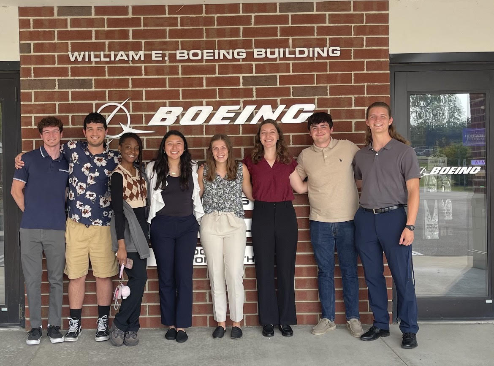
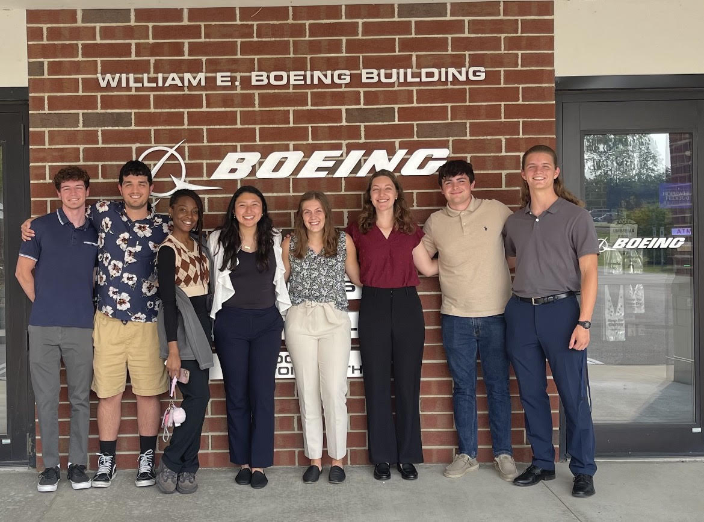
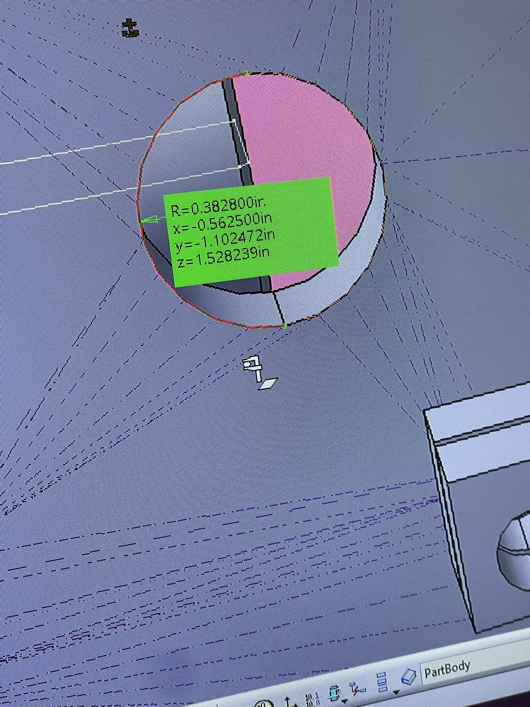
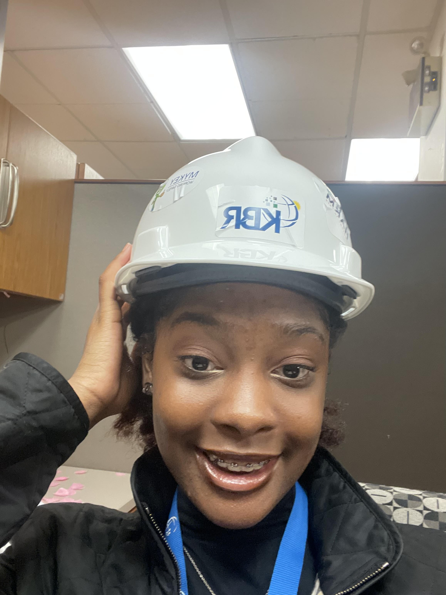
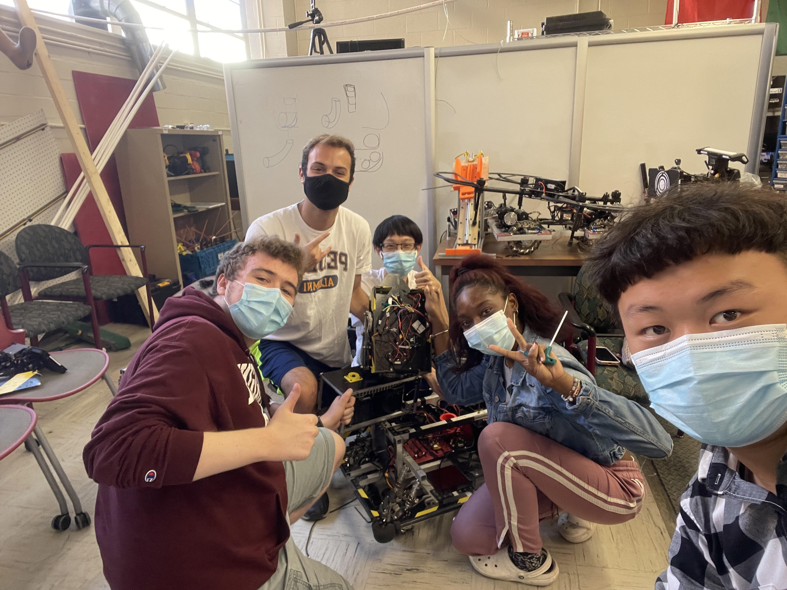
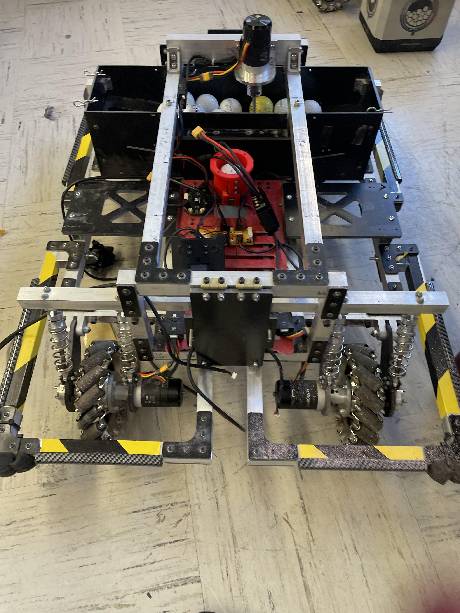
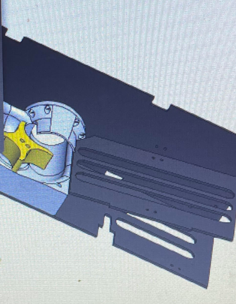
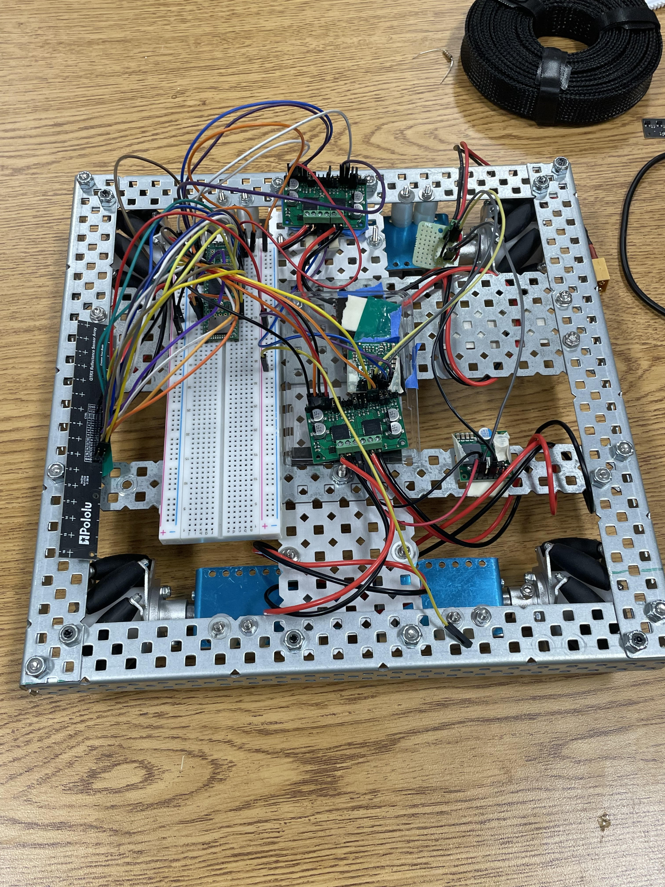
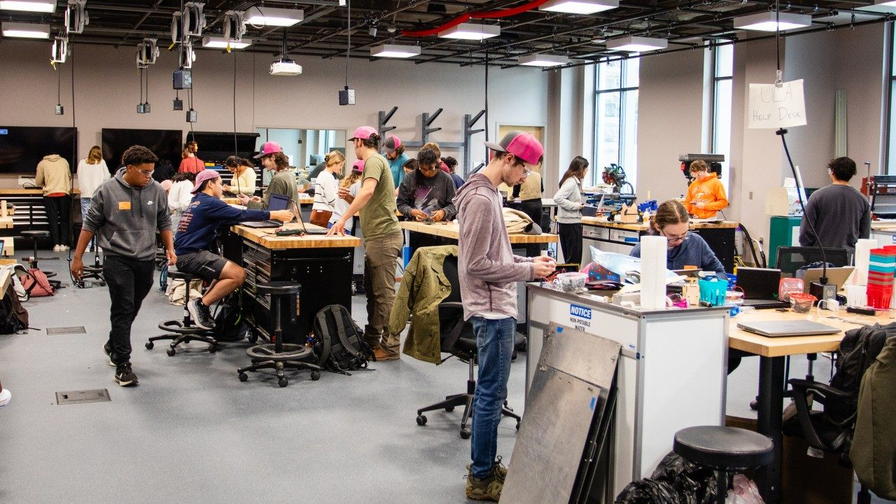
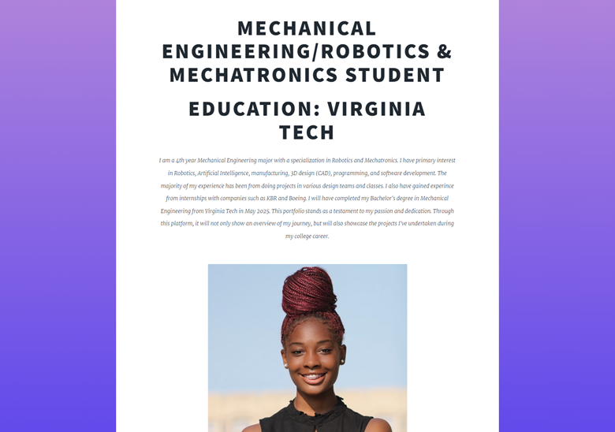

Mechanical Engineering/Robotics & Mechatronics Student
Education: Virginia Tech
I am a 4th year Mechanical Engineering major with a specialization in Robotics and Mechatronics. I have primary interest in Robotics, Artificial Intelligence, manufacturing, 3D design (CAD), programming, and software development. The majority of my experience has been from doing projects in various design teams and classes.
I also have gained experince from internships with companies such as KBR and Boeing.
I will have completed my Bachelor's degree in Mechanical Engineering from Virginia Tech in May 2025.
This portfolio stands as a testament to my passion and dedication. Through this platform, it will not only show an overview of my journey, but will also showcase the projects I've undertaken during my college career.
 

As a Production Engineering Intern at Boeing, I played a pivotal role in advancing my engineering skills,
particularly in the realm of Computer-Aided Design (CAD). I immersed myself in the introduction of Catia V5,
a sophisticated CAD software widely utilized in the aerospace industry. I also enrolled in a 40 hour course, which built my foundation of CATIA.
Through hands-on experience, I honed my
ability to create detailed and precise 3D models, which allowed me to contribute to the legacy tooling project, where I used CATIA to translate
2-Dimensional drawings of tools from the 1960s into modern day CATIA drawings, directly benefiting the design and development processes at Boeing.
My internship provided me with a profound understanding of aerospace engineering practices, and it
equipped me with insights into real-world engineering projects within a renowned aerospace
corporation.

Kellog Root & Brown (KBR) (2022)

I worked with KBR as a solo Mechanical Engineering intern, in which I led communication efforts with 15+
engineering vendors to gather budgetary quotes, engaged in collaborative discussions with DuPont representatives to
review CAD drawings and project proposals, and made on-site visits to plants for project inspections. One of my main projects at this internship
allowed me to develop a Lessons Learned Database for the Mechanical Engineering department using Microsoft Access and SQL, which would be impelemneted for use amongst all department employees, effective immediately.
I also spearheaded research initiatives on Electric
Sustainable Technologies, focusing on boilers and heat processors, to contribute valuable insights to the company's innovation endeavors.
Collaborative Robotics Lab (2023)

As an undergraduate researcher at Virginia Tech, I collaborated with another student,
specializing in the development of an interface for human-to-robot interaction, utilizing Python coding language. We achieved success in capturing
10 data points (10 gestures) for human gesture recognition through PyTorch which has contributed to my basic knowledge in both programming and experimental data acquisition
within the realm of robotics. Above is an image of me testing out the interface at its earlier stages.

In my role on the RoboGrinder robotics team at Virginia Tech, I led the design and development of an ammo Box for the turret of one of our many robots, "Hero," which was used for the RoboMaster competiton in 2022. I used SolidWorks to develop the design, and then utilizing my proficiency in machine tools, I played a hands-on role in bringing the concept to life. This project increased my understanding of mechanical design, fabrication processes , and collaborative teamwork.


American Society of Mechanical Engineers (2020)

While being a part of this organization, I assisted in manufacturing 100+ autonomous cut-outs which were placed into Virginia Tech’s Cassell Coliseum arena.
This project was executed as a solution to the challenges posed by Covid. Despite the constraints, the goal was to maintain the vibrant atmosphere
of college basketball, a cherished highlight of sports at Virginia Tech. This innovative initiative gained much attention and was
featured on ESPN, showcasing the successful fusion of technology, adaptability, and a commitment to preserving the spirit of collegiate sports
during unprecedented times.
Competitve Robotics Organization (CRO) (Present)

As a new member of CRO, I have rapidly integrated into the environment, contributing to the chassis development
and gaining valuable insights into the team's objectives. Currenlty, I have the responsibilty to brainstorm ideas
to enhance our robot's capabilities for this year's competition by developing solutions to navigate and cross
challenging terrains, such as a crater. This exciting engineering challenge is furthering my expertise of problem solving and robot manufacture.
Frith Lab at Virginia Tech (Present)

As an undergraduate lab student, I play a vital role in supporting fellow students with their engineering projects. I engage in
mentoring and training, particularly in the use of workshop tools. Through this experience, I have cultivated proficiency in a diverse
range of machine tools, including the laser cutter, CNC miller, Mitre saw, 3D printer, various drills and saws, vinyl cutters,
soldering irons, and other machining techniques. This hands-on involvement has not only equipped me with an understanding of these
tools, but has also enhanced my ability to guide and empower peers in their engineering endeavors, contributing to a collaborative and
skill-driven learning environment.
mikayla-dolo-pittman's Portfolio (2023)

Embarking on the creation of my portfolio, I dove into the world of HTML programming, unlocking the potential to create my own digital narrative. Despite the constraints and the initial "language barrier," I triumphed over challenges, using diverse range of learning resources. From insightful YouTube videos to the wealth of knowledge on Stack Overflow and beyond, each source played a pivotal role in shaping my portfolio. I even learned how to personalize it to my own liking in terms of aesthetic, and express my personality through photos. The creation of this portfolio is a project within itself, and I have gained new unexpected experience in coding with HTML.